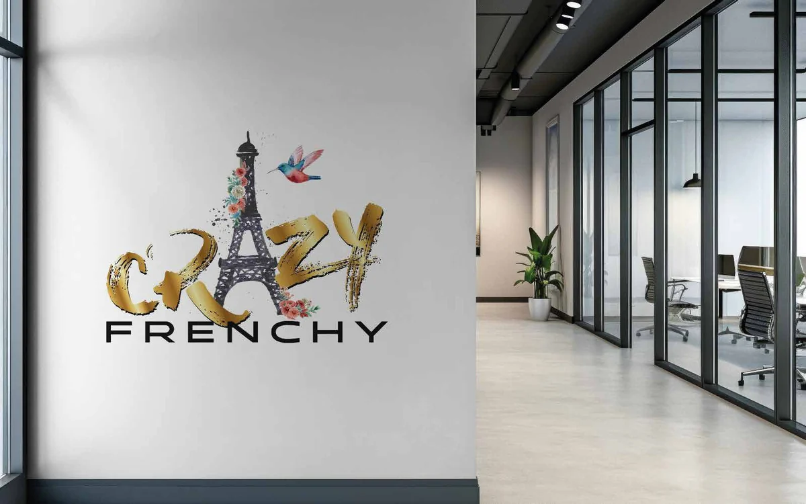
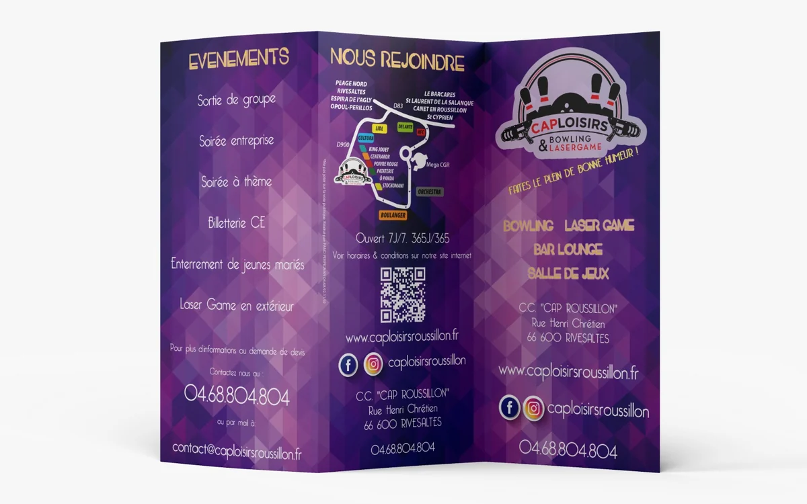
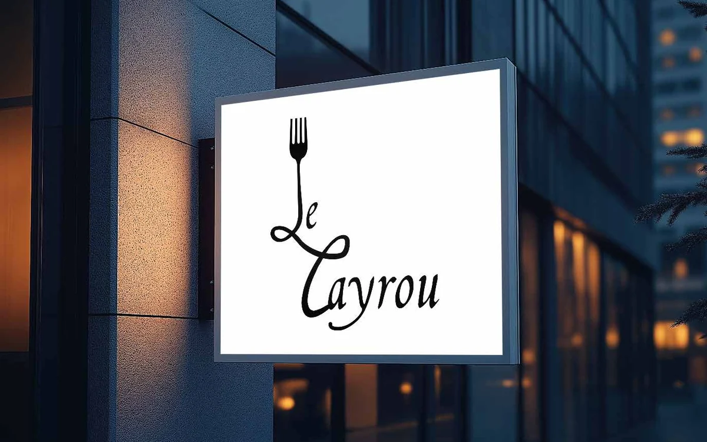

Tout ce qui porte votre nom,
conçu au même endroit
Du logo à l'enseigne, du menu au visuel Instagram : des solutions 360° pensées ensemble, pour que chaque support renforce le précédent au lieu de le contredire.
Création de logo
Un logo n'est pas un dessin joli : c'est un outil qui doit fonctionner sur une carte de visite de 8 cm comme sur un panneau de 3 mètres, en couleur comme en noir et blanc, brodé sur un polo comme affiché sur un écran.
Je pars de votre activité, de vos clients et de ce qui vous distingue réellement de la concurrence. Vous repartez avec un logo et ses déclinaisons, en fichiers sources vectoriels — ceux qui s'agrandissent sans perdre en netteté, et que n'importe quel imprimeur sait utiliser.

Ce que comprend la prestation
- Atelier de cadrage : activité, clientèle, positionnement, concurrence
- Pistes créatives argumentées, présentées en situation
- Déclinaisons : couleur, monochrome, fond sombre, format carré réseaux
- Fichiers sources vectoriels, prêts pour l'impression comme pour l'écran
- Cession des droits d'usage écrite dans le devis
Charte graphique
Un logo seul ne tient pas une image. Ce qui la tient, c'est ce qui l'entoure : les mêmes couleurs d'un support à l'autre, les mêmes polices, les mêmes règles. Sans document qui les fixe, chaque nouveau prestataire réinterprète, et l'image dérive sans que personne décide de la changer.
La charte écrit ces règles. Elle se commande avec un logo que je viens de créer, ou seule, pour un logo que vous avez déjà — y compris fait par quelqu'un d'autre. Son périmètre s'adapte : une association qui tient deux supports n'a pas besoin du même document qu'un restaurant qui en imprime quinze. On en fixe le contenu ensemble, et il est écrit dans le devis.
Ce qu'elle peut contenir
- Palette de couleurs, avec ses références pour l'écran et pour l'impression
- Typographies de titre et de texte, et leurs règles d'emploi
- Règles d'usage du logo : tailles minimales, espace libre autour, fonds autorisés
- Gabarits de supports : carte de visite, flyer, publication réseaux, signature mail
- Ton, style photographique et iconographie
- Le tout réuni dans un PDF que vous remettez à n'importe quel prestataire
Supports imprimés
Un fichier mal préparé, c'est un tirage raté et une facture pour rien. Fonds perdus, repères de coupe, résolution, profils colorimétriques, polices vectorisées : la partie technique fait partie du travail.
Je livre des fichiers directement exploitables par votre imprimeur, ou je gère l'impression avec des partenaires de la région et je vérifie les bons à tirer avant lancement.

Supports courants
- Cartes de visite, cartes de fidélité, chèques cadeaux
- Flyers, dépliants, brochures, catalogues
- Affiches et programmes d'événement
- Packaging, étiquettes, stickers
- Kakémonos, roll-ups, stands de salon
Signalétique, enseignes & véhicules
Votre devanture travaille pour vous vingt-quatre heures sur vingt-quatre. C'est souvent le premier support à reprendre, et le plus rentable.
Conception adaptée au grand format, en lien direct avec le poseur : dimensions relevées, contraintes de support prises en compte, fichiers fournis à ses normes. Pour les enseignes en centre-ville, je vous signale les démarches d'autorisation à prévoir auprès de la mairie.

Interventions
- Enseignes de façade et enseignes drapeau
- Vitrophanie : adhésifs, dépolis, lettrages de vitrine
- Panneaux de chantier et de signalisation
- Marquage de véhicule : voiture, camionnette, flotte
- Habillage de stand et de terrasse
- Relevé de cotes et coordination avec le poseur
Réseaux sociaux & supports numériques
Publier régulièrement est déjà difficile ; publier régulièrement et avec une image cohérente l'est encore plus. La solution n'est pas de tout me déléguer : c'est d'avoir de bons gabarits.
Je crée des modèles à votre image, que vous remplissez vous-même semaine après semaine — dans un outil que vous savez utiliser. Votre fil reste reconnaissable sans que vous ayez à repartir d'une page blanche à chaque publication.
Livrables
- Photos de profil et bannières, tous réseaux
- Gabarits de publication et de story, réutilisables
- Carrousels et visuels de campagne
- Signature de courriel et fond de visioconférence
- Visuels pour site web, bandeaux et vignettes
Gestion de projet & direction artistique
Chef de projet autant qu'infographiste : sur les opérations qui font intervenir plusieurs corps de métier, quelqu'un doit tenir le fil. Sinon l'imprimeur attend le poseur, qui attend le fichier, qui attend une validation.
Je peux prendre ce rôle : planning, coordination des prestataires, vérification des bons à tirer, contrôle de conformité à la livraison. Vous avez un seul interlocuteur et une seule facture à suivre.
Ce que cela couvre
- Rétroplanning et suivi des échéances
- Consultation et coordination des imprimeurs et poseurs
- Vérification des bons à tirer avant lancement
- Contrôle de conformité à la réception
- Direction artistique d'une campagne ou d'une saison
- Refonte progressive d'une communication existante
Combien ça coûte ?
Aucun tarif affiché ici, et c'est volontaire : un logo pour une association de quartier et une identité complète pour un restaurant de bord de mer n'ont ni le même périmètre, ni le même prix. Annoncer « logo à partir de 290 € » reviendrait à vous vendre quelque chose avant de savoir ce dont vous avez besoin.
Ce que je peux promettre : un devis détaillé ligne par ligne après notre premier échange, un périmètre écrit noir sur blanc, un nombre d'allers-retours fixé à l'avance, et aucun surcoût qui apparaît en cours de route.
Et pour le reste, des partenaires
Concevoir est mon métier ; imprimer, poser une enseigne, photographier un plat ou développer un site n'en sont pas. Je m'appuie sur des imprimeurs, des enseignistes et poseurs, des photographes et des développeurs de la région — vous n'avez qu'un interlocuteur, mais vous bénéficiez de plusieurs métiers. Et si vous avez déjà vos prestataires, les fichiers sont préparés pour qu'ils puissent travailler avec.
Pas sûr de ce dont vous avez besoin ?
C'est le cas de la plupart des personnes qui me contactent. Décrivez-moi simplement votre activité et ce qui vous gêne dans votre image actuelle : je vous dirai par quoi commencer, même si ce n'est pas par moi.